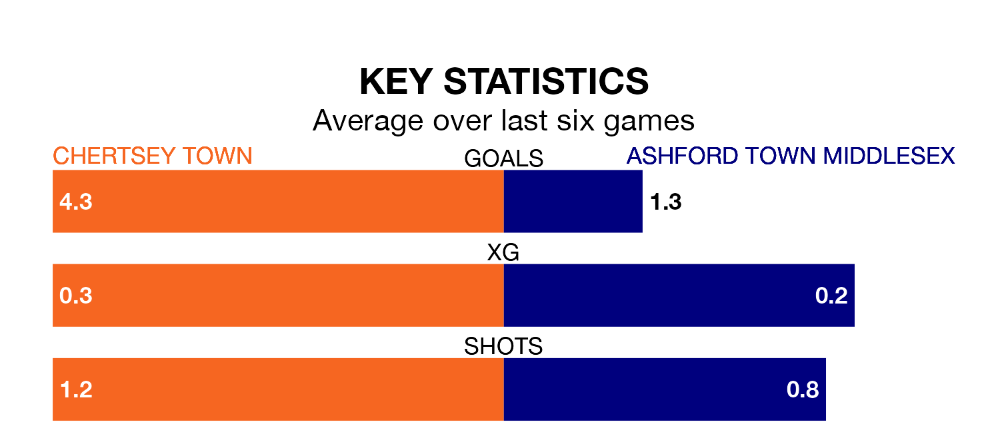

Chertsey Town are on an excellent run ahead of hosting Ashford Town Middlesex at Alwyns Lane Football Ground on Saturday, with 16 points collected from their last six games.
The Curfews have picked up five wins and one draw in their last six Isthmian League Division One – South Central games, and face a Tangerines side whose last six games have brought one win and two draws.
Chertsey are top of the table after 22 games, of which they have won 17 and drawn four, earning 55 points.
Ashford Town Middlesex are 16 places behind Town in 17th, with five wins and five draws putting them on 20 points.
With 64 goals in 22 games so far this season, the Curfews are the league's second-highest scorers with 2.9 goals per game. And they are conceding fewer than average, letting in 17 goals at a rate of 0.8 per game.
The Tangerines, meanwhile, are below average scorers, with 1.2 goals per game, compared to a league average of 1.7. They have conceded 1.6 goals per game.
In the last 10 years, Chertsey and Ashford Town Middlesex have played each other on six occasions. Chertsey won five of them and they drew once.
On average, the Curfews scored 3.0 goals and the Tangerines 0.7 in those matches.
Their last meeting was on September 30, when Chertsey won 3-0 away.
Chertsey's last match was on January 20, a 6-0 win against Uxbridge.
Ashford Town Middlesex drew 2-2 with Chipstead last time out, on January 13.
Updated: 08:51 (UTC), 25/01/24